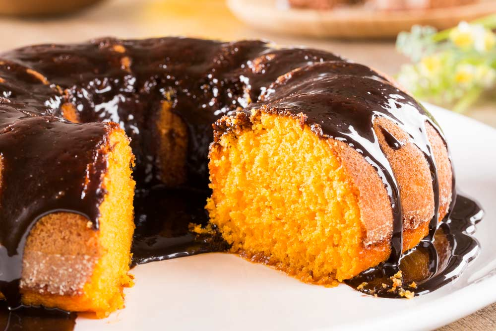

Lasanha de carne moída

Ingredientes:
- 1 pacote de massa de lasanha pré-cozida
- 500g de carne moída
- 1 cebola picada
- 2 dentes de alho picados
- 2 latas de molho de tomate
- 1 lata de creme de leite
- 250g de queijo mussarela ralado
- Sal e pimenta a gosto
Modo de preparo:
Em uma panela, refogue a carne moída com a cebola e o alho. Adicione o molho de tomate e tempere com sal e pimenta. Deixe cozinhar por 10 minutos. Em um refratário, faça camadas de molho de carne, massa de lasanha, creme de leite
Bolo de cenoura
Ingredientes:
- 2 cenouras médias
- 3 ovos
- 1/2 xícara de óleo
- 2 xícaras de açúcar
- 2 xícaras de farinha de trigo
- 1 colher de sopa de fermento em pó
Modo de preparo:
Bata no liquidificador as cenouras, os ovos e o óleo. Em uma tigela, misture o açúcar, a farinha de trigo e o fermento. Adicione a mistura do liquidificador e mexa bem. Coloque em uma forma untada e asse em forno preaquecido a 180 graus por cerca de 40 minutos.
Pudim de leite condensado

Ingredientes:
- 1 lata de leite condensado
- 1 medida (lata) de leite
- 3 ovos
- 1 xícara de açúcar
- 1/2 xícara de água
Modo de preparo:
Bata no liquidificador o leite condensado, o leite e os ovos. Em uma forma de pudim, misture o açúcar e a água e leve ao fogo até formar uma calda. Despeje a mistura do liquidificador na forma e leve ao forno em banho-maria por cerca de 1 hora. Deixe esfriar e desenforme.